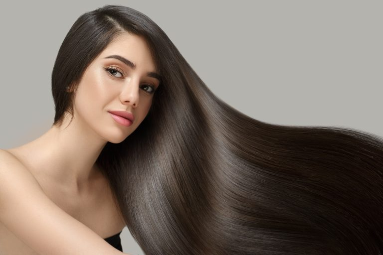

♥ Tipos de tratamento e o ideal para o seu cabelo: ♥
O tratamento capilar é responsável por reter ou repor a umidade dentro do fio, assim como devolver os nutrientes e as proteínas perdidos na fibra devido à ação de fatores mecânicos ou químicos. Para que esse processo alcance o resultado desejado, é preciso contar com os ingredientes.
Há uma série de procedimento populares que são responsáveis por trazer cuidados especiais para todos os tipos de danos sofridos pelos cabelos.

♥ 1. Cauterização ♥
Esse processo é especialmente indicado para cabelos que passaram por processo de descoloração, bem como para quem se submeteu a escovas progressivas, alisamentos e colorações caseiras, que deixam os fios porosos.
♥ 2. Umectação capilar ♥
A umectação capilar funciona graças à ação dos óleos essenciais. Eles hidratam e nutrem os fios, reparando problemas como frizz, ressecamento e pontas duplas.
♥ 3. Com creme de tratamento ♥
Os cremes de tratamento são ideais para hidratar os fios no dia a dia, sendo usados como uma espécie de condicionador mais potente. Eles atendem aos cabelos rebeldes e ressecados, fornecendo maior capacidade de controle.
♥ 4. Máscara capilar ♥